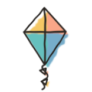
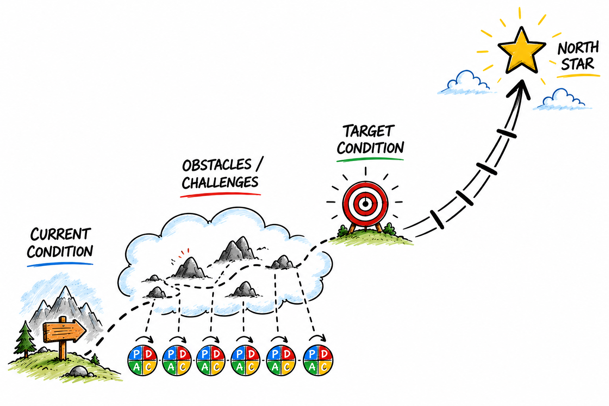
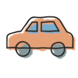
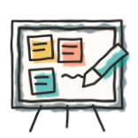

Welcome back
Day 6 of 8 · Thursday 15 October

Check in
“Where are you, and how's it feeling?”
capstone iterations run
0 → 3+
tutorial iterations done: 1 → 7
a dot each on the Miro grid · one word about how it's going
Today
Today
How did the homework go?
“What did you try, and what happened?”

small rooms · 9 min · a sticky in each Miro column · then a few of us share
Today
Two backlogs

The work
Features for your capstone

Improving the factory
Machines, checks, routes, seeds
More and more of your work is on the right: fix the machine, not the code
The Improvement Kata

Your North Star

Dark factory
Give it an idea and then see it in production

As good as a human
Code and product quality as good as a senior dev

Fast and cheap
Every feature is one hour and five dollars, or better
choose a room · 10 min · coach one person: current condition → target for next week → next step
Today
Show and tell, next week
Your factory
about 7 min each · the whole group · sign up for Tuesday on Miro now
What's missing?
“What do you still want to figure out for this course to be a really valuable use of your time?”

1 min alone · pairs · then all of us
Today
Homework 5a: machine configuration (bugfix)
.machines/doer/
AGENTS.md what it's for, how it works
machine.json its harness and model
auth.json its own login, not in Git

Each machine runs on its own configuration, and no other. Change its AGENTS.md, and the machine changes.
Start with this prompt:“Please pull in the changes from the upstream fork; then pull iteration 005a”
Preview: watch
$ bin/factory --run tetris …
started run tetris
$ bin/factory watch tetris
doer | …
tokens doer 12.4k in / 3.1k out
Start a run, get your terminal back, and watch it from anywhere: what each machine says, and what it spends
Preview: steer (bonus)
$ bin/factory say tetris doer "use curses"
delivered to doer
$ bin/factory say tetris validator "be strict"
refused: doer is what is running

Send a message to a machine while it works. It lasts for this run only.
Over the weekend
Retro and takeaways
“One thing you're taking away.”

See you Tuesday!